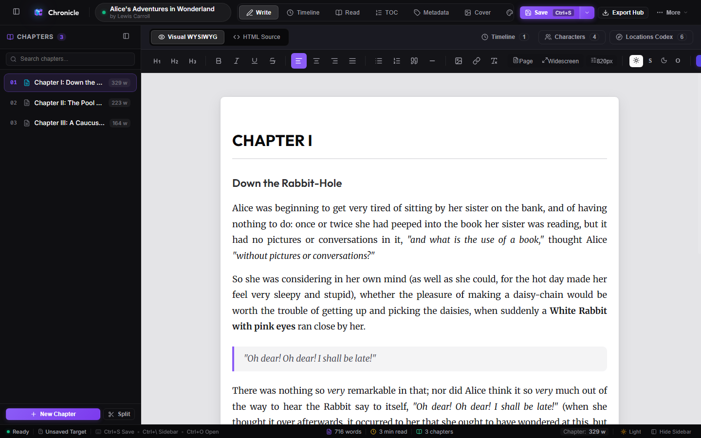
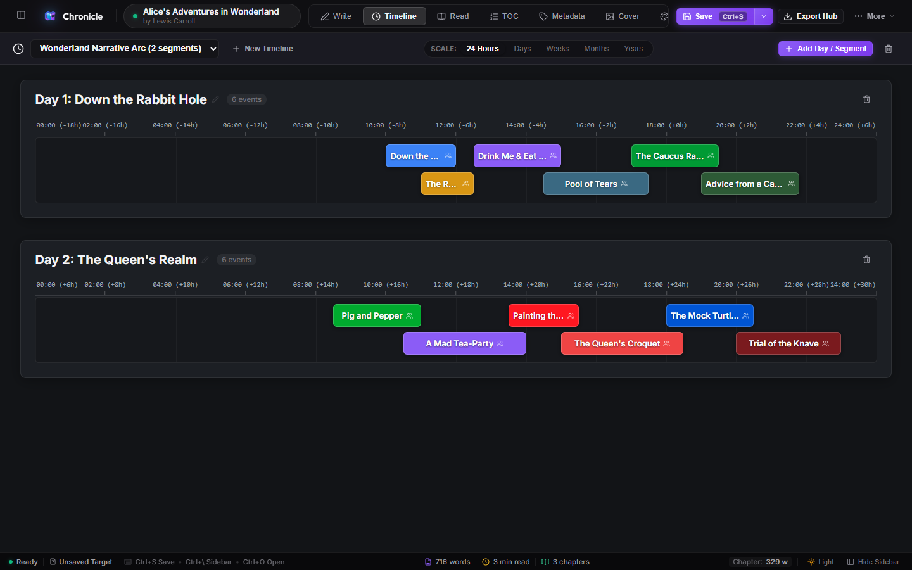
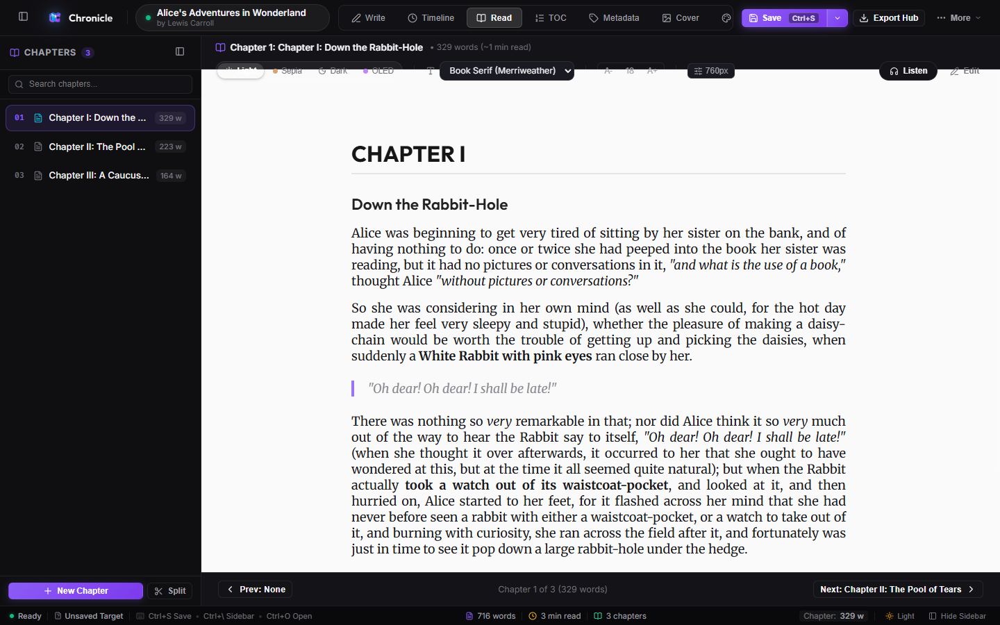
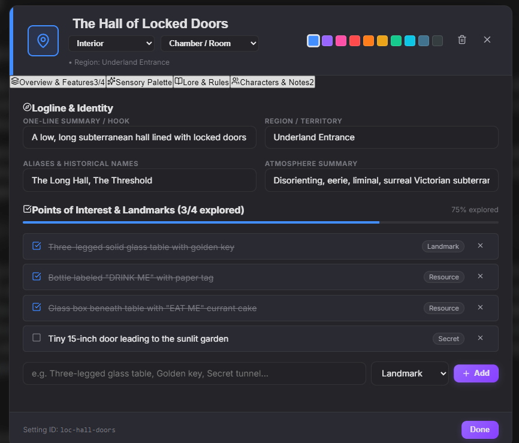
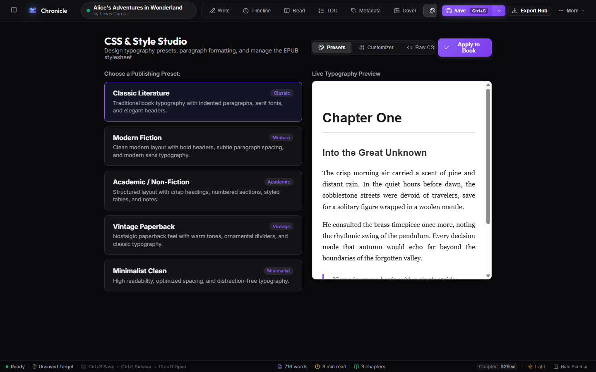

Chronicle replaces cluttered paid subscriptions with a unified, distraction-free authoring powerhouse. Plot multi-strand timelines, build living codexes, annotate with dual-view author comments, design custom book covers, and typeset publication-ready Vector PDFs, Shunn manuscripts, and EPUB 3 books—all in one private, local-first studio.

Explore the specialized studios engineered into Chronicle to support you from initial brainstorm to final published book.
A focused WYSIWYG canvas engineered specifically for novelists. Organize chapters with zero-jitter navigation, annotate text with a 6-color author highlight palette, split chapters in one click, and clean up dialogue with the smart typography engine.
Browse, reorder, and split chapters with instant word count metrics.
WYSIWYG formatting, customizable margins, and typography presets.
Real-time word counts, chapter tallies, and estimated reading durations.
Map out chronologies, story arcs, and operational beats on interactive time rulers with multi-segment tracks and fluid drag-and-drop mechanics.

Switch smoothly between hours, days, chapters, or multi-year epics.
Drag, resize, and link narrative beats directly to characters and lore.
Smart collision algorithms stack parallel events cleanly into lanes.
Experience your book exactly as your readers will. Switch between 4 curated paper tones, adjust typography sizing, and listen to chapters read aloud with human-grade voice synthesis that runs 100% locally on your computer.

Warm Sepia, Obsidian OLED, Crisp Light, and Midnight Blue.
Scrub bar, narration speed, and high-fidelity local voices.
Tailor line heights, letter spacing, and book typefaces with one click.
Keep complex lore organized. Create rich character profiles with psychological archetypes and traits, plus detailed location cards complete with sensory palettes and landmarks.

Document sight, smell, weather, sounds, and visit checklists.
Track traits, internal motives, arc trajectories, and relationship ties.
Filter factions, items, heroes, and places in milliseconds.
Turn raw drafts into publication-ready books without needing InDesign, Vellum, or expensive formatters. Design custom covers and export straight to physical print and e-readers.

Set standard book trims (6x9, 5.5x8.5, A5), gutters, and running heads.
Print-Ready PDF, Industry Shunn .docx, and standard EPUB 3.
Inspect drop caps, ornaments, folios, and breaks in real time.
A local-first, modular platform built for deep author focus, boundless worldbuilding, and total creative ownership.
Plot complex story chronologies with precision time rulers. Track events across multi-day segments, subplots, or character POV tracks. Collision avoidance automatically stacks overlapping beats into sub-lanes so every turning point remains crystal-clear.
Annotate manuscripts with a curated 6-color highlight palette. Jump to notes with smooth pulsing animations, toggle highlights on or off, and rest easy knowing draft notes are automatically stripped from published editions.
Design eye-catching book covers directly in the studio. Choose from curated gradient canvases, genre SVG emblems (fantasy, sci-fi, thriller), elegant typography pairings, and decorative borders.
Export high-resolution, vector-accurate PDFs designed for physical printing. Includes customizable headers, author folios, page numbering, ornamental section dividers, and drop caps that scale seamlessly to any industry trim size (6x9, 5.5x8.5, A5).
Generate submission-ready Word documents adhering to the industry-standard William Shunn format (running headers, word counts, courier type, sluglines, and proper contact blocks).
Listen to your chapters read aloud with ultra-realistic human cadence. Powered by Kokoro Text-to-Speech running 100% on your device via WebGPU/WASM without sending manuscript text to any remote server.
Flesh out character psychology, archetypes, internal conflicts, and relationships. Record sensory palettes for locations (sight, sound, scents, atmosphere) and check off landmarks during story exploration.
Immerse yourself in 4 handcrafted aesthetics: ModernX Dark (obsidian graphite), ModernX Light (porcelain slate), Glass Dark (frosted cyan glow), and Glass Light (luminous pearlescent frost). Engineered with zero-jitter layout stability and distraction-free ergonomics.
Synchronize manuscripts seamlessly across your workstations with self-hosted Nextcloud, ownCloud, Fastmail, or any standard WebDAV cloud server in the desktop app.
One-click automated cleanup. Formats straight quotes into curly book quotes, cleans up em-dashes, ellipses, dialogue punctuation spacing, and eliminates accidental double spaces across chapters.
Your stories are never held hostage in proprietary binaries. A .chronicle project is a
standard, unencrypted ZIP archive containing clean XHTML chapters, raw styles, and plain JSON metadata.
Direct source code editing for typography purists. Inspect and fine-tune raw XHTML, edit CSS stylesheets with live syntax highlighting, and inspect the package manifest (OPF) and spine hierarchy.
See how Chronicle compares directly against legacy desktop tools and expensive recurring cloud subscriptions.
| Capability & Workflow | Chronicle | Scrivener | Vellum | World Anvil |
|---|---|---|---|---|
| Pricing & License Cost to own and use indefinitely | 100% Free & Open Source (GNU AGPLv3) | $60+ per OS license | $250 (Mac-only) | $105/year subscription |
| Distraction-Free Authoring Canvas WYSIWYG chapter editor & binder | Modern, zero-jitter | Complex binder | Basic preview editor | Online-only web forms |
| Dual-View Author Comments 6-color palette, auto-clean EPUB export | Dual-view & zero leak | Sidebar footnotes only | Not supported | Disorganized wiki notes |
| Narrative Timeline Creator Collision lanes & multi-timescales | Integrated visual studio | Requires 3rd party tool | Not supported | Clunky timeline module |
| Worldbuilding Codex Character psychology & sensory locations | Built-in deep dossiers | Plain text folders | Not supported | Supported (Online) |
| Print-Ready Vector PDF Typesetter Drop caps, trims, running heads & folios | Full vector book proofs | Complex compile rules | Excellent (Mac-only) | Not supported |
| William Shunn Manuscript (.docx) Standard format for editors & agents | One-click native export | Requires custom preset | Not supported | Not supported |
| Built-In Book Cover Designer Typography presets, SVG emblems & frames | Built-in Studio | Requires Photoshop/Canva | Static image import only | Not supported |
| Offline Kokoro Text-to-Speech Audio Local proofreading & narration | 100% on-device (WebGPU) | Robotic OS voice only | Not supported | Not supported |
| Cross-Platform Availability Operating system flexibility | Windows, Mac & Web | Separate Mac & Win licenses | macOS Only | Web browser only |
| Privacy & Data Ownership Local-first, zero tracking, open formats | 100% Local (Open ZIP archive) | Local files | Local files | Cloud hosted, telemetry |
Common questions from independent novelists, worldbuilders, and publishers about Chronicle.
Yes. Chronicle is completely free and open source, licensed under the GNU Affero General Public License v3 (AGPLv3). There are no subscriptions, no locked tiers, no ads, and no hidden fees ever. You retain 100% ownership and intellectual property rights over every word and book you produce.
Unlike Scrivener (which has a steep learning curve, dated interface, and proprietary sync), Vellum (which costs $250 and is locked exclusively to macOS), and World Anvil (which charges ongoing monthly fees and stores data on remote servers), Chronicle unifies all three essentials into one cohesive studio.
With Chronicle, you get focused writing with dual-view comments, interactive story timelines, character dossiers, audio proofreading, and publication-grade Vector PDF/EPUB typesetting—in one private app that runs on Windows, Mac, and web.
Yes. Chronicle’s Vector PDF Typesetter generates high-resolution, vector-accurate PDFs adhering to standard publishing trims (6"x9", 5.5"x8.5", A5, etc.) complete with proper page geometry, running headers, author folios, ornamental dividers, and scalable drop caps.
Our EPUB 3 exporter generates clean, validated semantic markup with embedded fonts and SVG cover manifests, ready for immediate upload to Kindle Direct Publishing (KDP), Apple Books, Kobo Writing Life, and Google Play.
Yes. Chronicle includes a native William Shunn manuscript exporter (.docx) engineered specifically for submissions to traditional publishers, literary magazines, and agents. It automatically formats your story with 1-inch margins, Courier typography, headers with your surname and title slug, word count approximations, and standard contact blocks.
Not a single byte of your story ever leaves your computer. The Kokoro Text-to-Speech speech engine is executed directly on your hardware via WebAssembly (WASM) and WebGPU acceleration. It provides expressive, natural human cadence for proofreading dialog and pacing—with zero latency, zero cloud costs, and complete privacy.
Chronicle is built local-first and works seamlessly without an internet connection. When you want multi-device synchronization, the desktop app supports native WebDAV integration—letting you sync directly to your private Nextcloud, ownCloud, Fastmail, or home NAS server without any third-party subscription or cloud lock-in.
Experience the complete distraction-free novel writing and publishing suite natively on your computer. No installation wizard or administrator privileges required—simply download and run immediately.